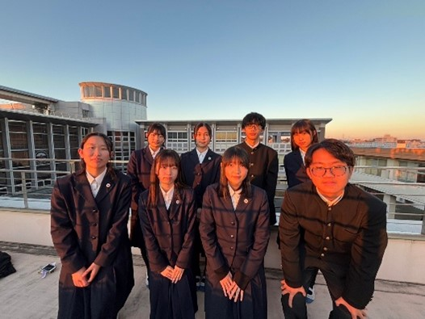

生徒会

生徒会メンバー集合写真
私たち生徒会役員は、1年生4名、2年生4名の計8名で活動しています。主な活動は、学校行事の企画・運営、部活動の会計・事務処理等です。また、学際TSUCHIURAの運営に参加したり、募金活動を行ったりと、対外的な活動も行います。
私たちの活動は日々挑戦の連続です。どの活動も決して楽なことではありませんが、私たちの活動の積み重ねが、次の世代の希望となることを願っています。
変化の激しいこの時代ですが、皆様の意見を広く聞き入れ、生徒会一丸となって新たな歴史を切り開いて参ります。
(生徒会長 星 真朝)
進路状況
進路状況の推移（過去14年間）
進路状況の推移
国公立大学
私立大学
短大
専修学校
就職
男女共学後の進路状況
| 卒業年度 | 国公立大 | 私立大 | 合計 | 短大 | 専修学校 | 就職 | 卒業生数 |
|---|---|---|---|---|---|---|---|
| 平成22年 | 94(13) | 601(83) | 695(96) | 9(0) | 21(0) | 2 | 319 |
| 平成23年 | 91(10) | 733(85) | 824(95) | 6(0) | 21(0) | 1 | 314 |
| 平成24年 | 103(10) | 667(19) | 770(29) | 13(0) | 6(0) | 2 | 314 |
| 平成25年 | 83(13) | 625(47) | 755(60) | 13(0) | 25(0) | 1 | 313 |
| 平成26年 | 78(3) | 708(45) | 786(48) | 13(0) | 20(0) | 1 | 311 |
| 平成27年 | 82(6) | 733(43) | 815(49) | 9(0) | 11(0) | 6 | 312 |
| 平成28年 | 124(6) | 730(32) | 854(38) | 4(2) | 13(0) | 1 | 317 |
| 平成29年 | 142(9) | 857(34) | 999(43) | 9(3) | 16(0) | 2 | 316 |
| 平成30年 | 112(6) | 658(27) | 770(33) | 4(0) | 15(0) | 1 | 319 |
| 令和1年 | 131(9) | 794(57) | 925(66) | 2(0) | 16(0) | 2 | 312 |
| 令和2年 | 137(4) | 1078(54) | 1215(58) | 1(0) | 4(0) | 0 | 313 |
| 令和3年 | 120(6) | 688(65) | 808(71) | 0(0) | 10(0) | 2 | 308 |
| 令和4年 | 131(11) | 872(25) | 1003(16) | 1(0) | 14(0) | 1 | 309 |
| 令和5年 | 150(2) | 1043(14) | 1193(16) | 1(0) | 10(1) | 0 | 306 |
※（ ）内は過年度卒合格者数
難関・主要大学合格者数（過去7年間）
国公立大学
| 大学名 | 令和5年 | 令和4年 | 令和3年 | 令和2年 | 令和1年 | 平成30年 | 平成29年 |
|---|---|---|---|---|---|---|---|
| 北海道大学 | 1 | 1(1) | 1 | 1 | - | 1 | 1(1) |
| 東北大学 | - | 1 | - | - | - | 2 | - |
| 茨城大学 | 66(1) | 59(3) | 45(1) | 51 | 49(4) | 37 | 49(2) |
| 筑波大学 | 12 | 13 | 13 | 10(2) | 15(1) | 12 | 12(2) |
| 埼玉大学 | 6 | 5 | 1 | 2 | 1 | 5(1) | 6 |
| 千葉大学 | 1 | 3(1) | 3 | 2 | 1 | 4 | - |
| 電気通信大学 | - | - | - | 1 | 2 | - | 5 |
| お茶の水女子大学 | - | - | - | 1 | - | - | - |
| 東京工業大学 | - | - | 1 | - | - | - | - |
| 東京外国語大学 | 1 | 1 | - | - | 2(1) | - | 1 |
| 名古屋大学 | - | 1 | - | - | - | - | - |
| 京都大学 | - | - | 1 | - | - | 1 | - |
| 大阪大学 | - | - | - | - | - | 1 | - |
| 東京学芸大学 | - | - | 2 | 3 | 2 | 1 | - |
| 茨城県立医療大学 | 12 | 10 | 12 | 12 | 22 | 13 | 12 |
| 東京都立大学 | 1 | 4(1) | 1 | 1 | 2 | 1 | 4(1) |
私立大学
| 大学名 | 令和5年 | 令和4年 | 令和3年 | 令和2年 | 令和1年 | 平成30年 | 平成29年 |
|---|---|---|---|---|---|---|---|
| 青山学院大学 | 10(1) | 6 | 7(2) | 3(1) | 9 | 3(1) | 5(1) |
| 学習院大学 | 16(1) | 14 | 10(1) | 7 | 8(2) | 9(2) | 8(1) |
| 慶應義塾大学 | 1 | 1(1) | 2(1) | - | - | 1 | - |
| 上智大学 | 3 | 3 | 1(1) | 1 | 3(2) | 1 | 4(2) |
| 中央大学 | 9 | 11(2) | 6(3) | 1(2) | 4(2) | 7 | 6 |
| 東京理科大学 | 3 | 10(2) | 6 | 6 | 11 | 6(2) | 12 |
| 法政大学 | 25(1) | 19(1) | 14(2) | 7(2) | 17 | 10(3) | 17(3) |
| 明治大学 | 13 | 20 | 9 | 4 | 8(2) | 7 | 8 |
| 立教大学 | 19(1) | 11 | 9 | 8(1) | 11(4) | 1 | 12(1) |
| 早稲田大学 | 0 | 2 | 1 | 2(1) | 1(1) | 4(2) | 5(1) |